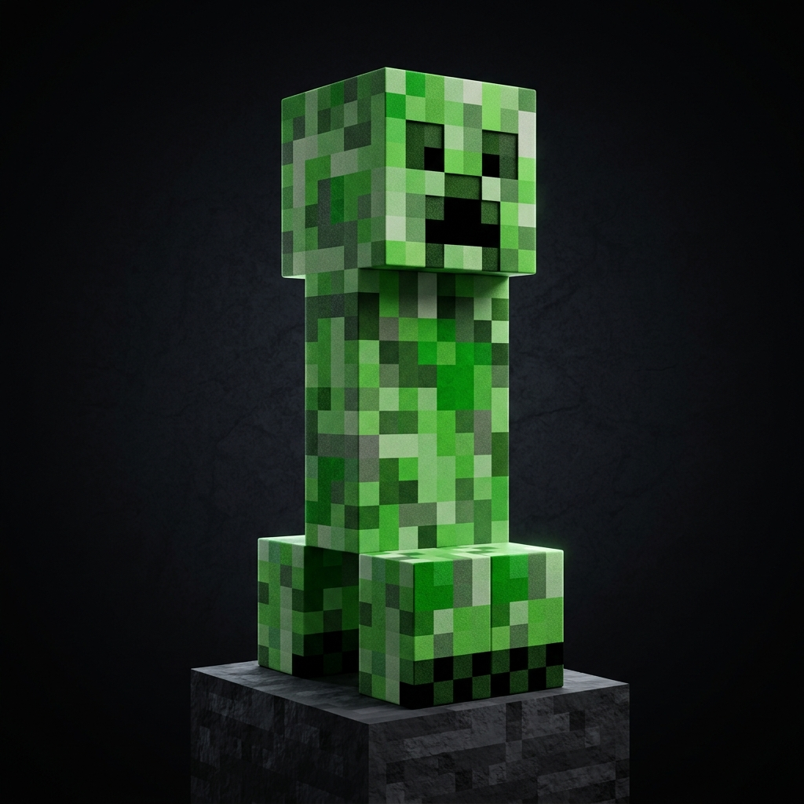
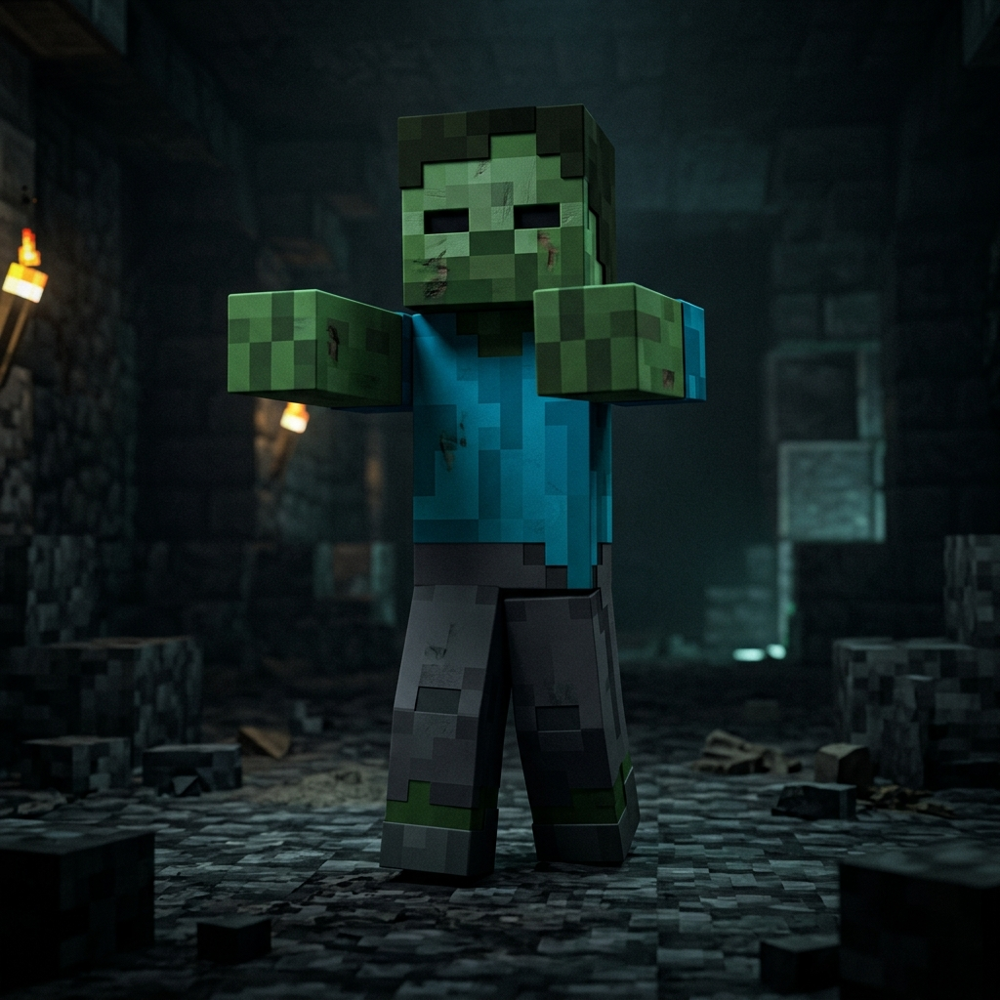
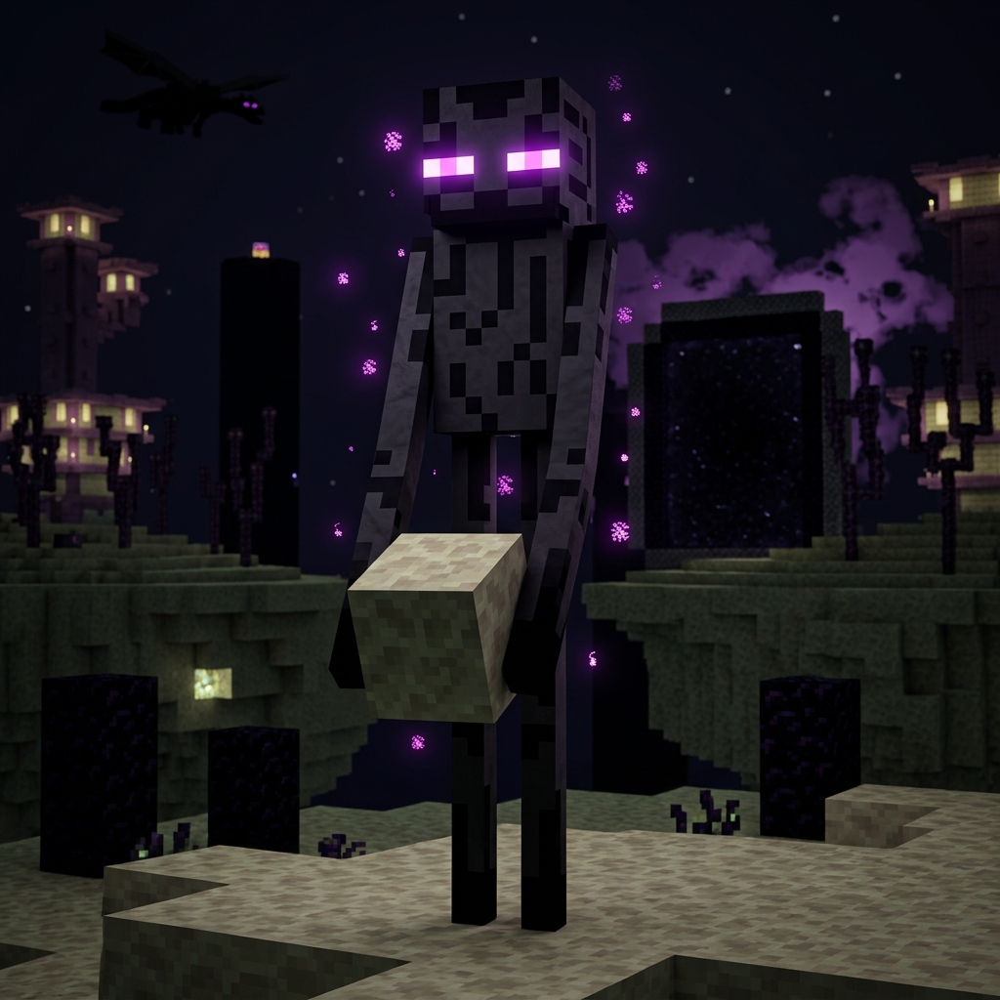
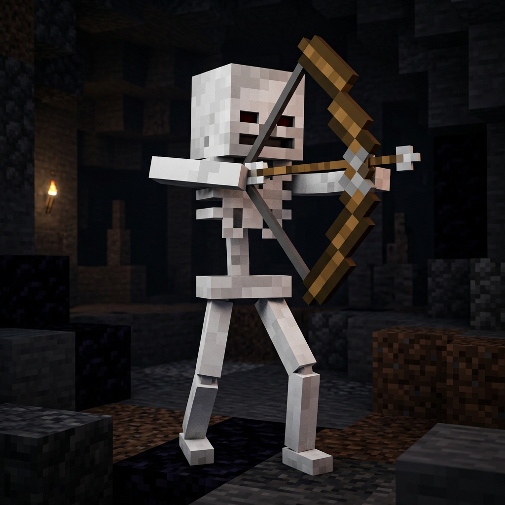
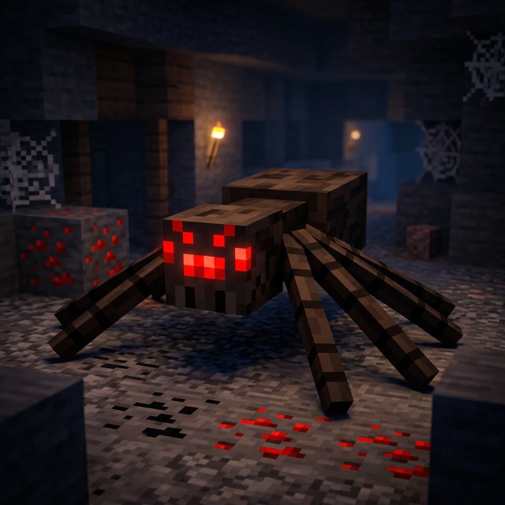
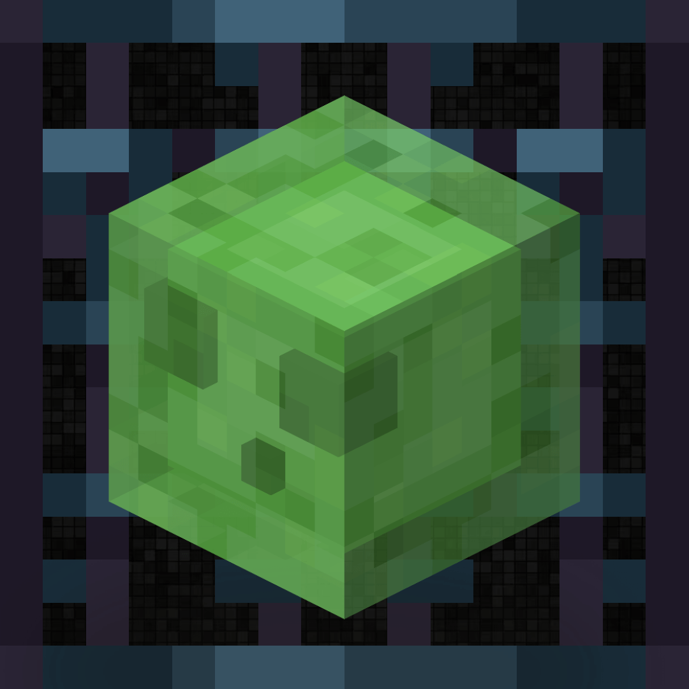

在這個由方塊組成的世界裡，唯一的限制就是你的想像力。
選擇適合你的冒險方式
收集資源、合成工具、擊退怪物，並在夜晚中努力存活下來。從一無所有到建立專屬帝國！
擁有無限的資源，並賦予你飛行的能力。專心打造宏偉的建築或精密的紅石機關，不受任何限制。
最艱難的挑戰！難度被鎖定在最高級別，而且你只有一次生命。一旦死亡，世界將永遠無法重來。
在方塊世界中會遇到的一些經典角色

Minecraft 的標誌性怪物！牠不發出任何聲音地悄悄靠近玩家，然後發出「嘶嘶」聲並爆炸，能夠瞬間摧毀建築與地形，是玩家最大的噩夢。

夜晚中最常見的敵對生物，移動緩慢但群體龐大。被牠打中的村民會感染成為殭屍村民。陽光出現後牠們就會開始燃燒。

來自終界的高大黑色生物，擁有瞬間移動能力，且能搬運方塊。牠平時無害，但若直視牠的紫色眼睛，牠將立刻對你發動攻擊！

持弓的骷顱怪，擅長在遠距離射箭攻擊。命中率極高，並且能夠在逃跑的同時持續攻擊，是夜晚最讓人頭痛的遠程威脅。

八隻腳的黑色生物，能夠攀爬任何牆壁與天花板，讓玩家防不勝防。白天保持中立，但夜晚降臨後便會主動發起攻擊，速度相當快。

由綠色黏液組成的方塊生物，出沒於地底深處與沼澤地帶。被擊敗後會分裂成更多小史萊姆，小史萊姆無害但讓人煩惱不已。
數百萬名玩家正在探索他們的世界，現在就加入吧！